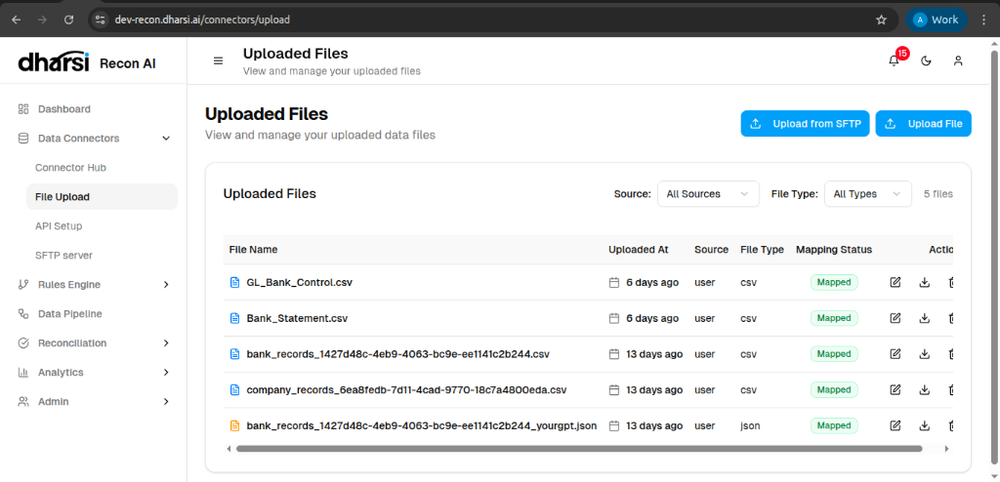
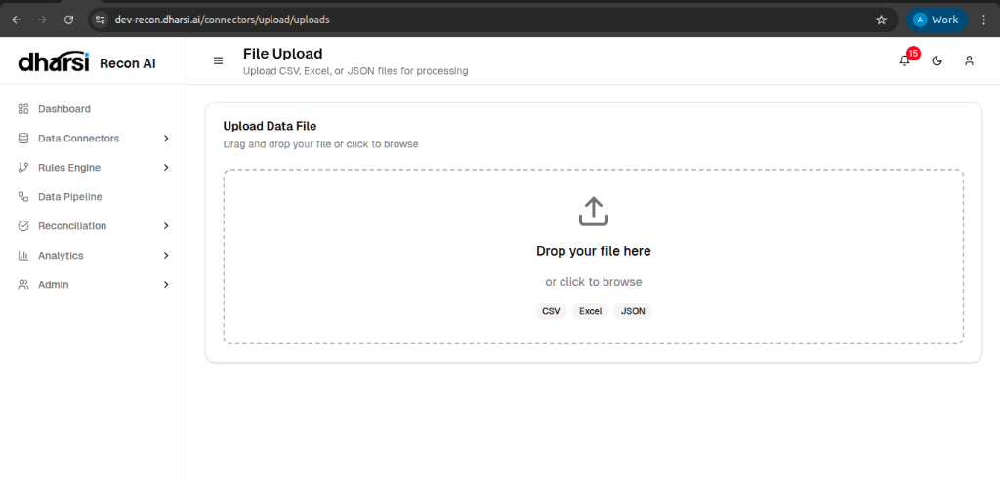
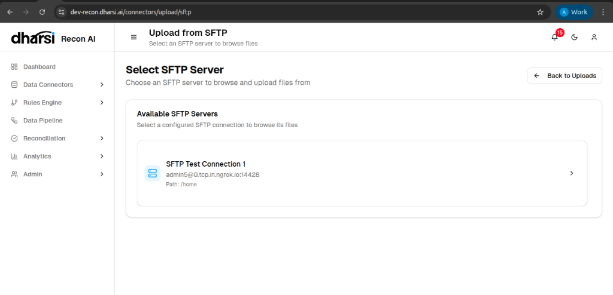
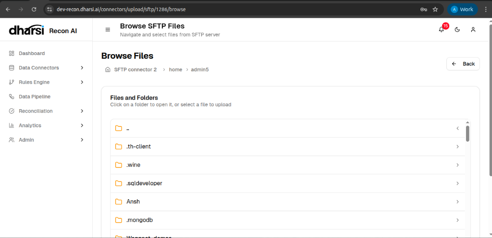

File Upload
The File Upload interface is the central location for managing all file-based data imports, including CSV, Excel, and JSON files.

Overview
This page displays a history of all uploaded files along with their processing status.
- File Name: The name of the imported document.
- Uploaded At: Timestamp of when the file was processed.
- Source: The origin of the file (e.g., User upload).
- File Type: The format of the data (csv, json, etc.).
- Mapping Status: Indicates if the file columns have been mapped to the system schema (e.g., Mapped).
Actions
Users can perform specific actions on each record:
- Edit: Modify mapping or file details.
- Download: Retrieve the original file.
- Delete: Remove the file from the system (if permitted).
You can also initiate new uploads using the buttons at the top right:
Upload File
Clicking Upload File opens the local upload interface. Here, you can drag and drop your file or browse your system to select a CSV, Excel, or JSON file for immediate processing.

Upload from SFTP
Clicking Upload from SFTP redirects you to the server selection page. You must first choose a configured SFTP server to browse and select files residing on the remote system.

Browsing Files
Once you select a connector, you will be taken to the Browse SFTP Files interface.
- Navigate: Click on folders to explore the directory structure of the remote server.
- Select: Choose the specific file you wish to import.
- Map: After selecting a file, you can proceed to the mapping stage to define how the file's columns relate to your schema.
